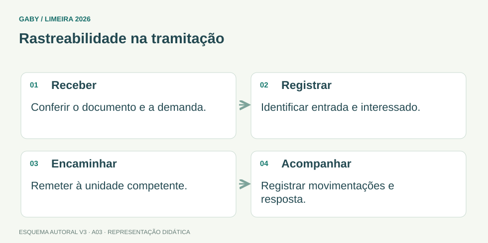

Objetivos do módulo
- Entender o ciclo documental de um processo administrativo.
- Distinguir autuação, registro, numeração, instrução e encaminhamento.
- Aplicar rastreabilidade e controle de tramitação.
Rastreabilidade na tramitação

Descrição em texto do esquema
- Receber: Conferir o documento e a demanda.
- Registrar: Identificar entrada e interessado.
- Encaminhar: Remeter à unidade competente.
- Acompanhar: Registrar movimentações e resposta.
Oficina visual · aplique o esquema
Um processo foi encaminhado sem data, destino ou identificação do responsável. Qual problema isso cria?
Atividade autoral complementar da V3. Registre sua resposta; a resolução está no arquivo de gabarito e revisão.
Mapa do conteúdo
1. Do documento ao processo
Um processo administrativo reúne documentos e registros relacionados a uma demanda para permitir análise, decisão e comprovação dos atos. O fluxo deve preservar identidade, ordem, integridade e rastreabilidade.
2. Autuação
Autuar é formalizar a abertura do processo a partir de documentação inicial, atribuindo identificação e organizando seus elementos conforme regras do órgão/sistema. A autuação transforma a demanda em unidade processual controlável.
3. Registro e numeração
Registro insere dados essenciais no sistema/livro de protocolo: interessado, assunto, origem, data, número e outros campos. Numeração permite individualizar e recuperar o processo. Evite duplicidades e alterações sem trilha de auditoria.
4. Instrução e formalização
Instruir é reunir documentos, informações, manifestações e evidências necessárias para análise. Formalização exige que atos sejam identificáveis, datados e associados ao processo, respeitando procedimentos internos.
5. Encaminhamento e tramitação
Encaminhar é remeter o processo ao setor competente, registrando origem, destino, data e, quando necessário, motivo. O controle de tramitação permite saber onde o processo está e quem recebeu.
6. Rastreabilidade
Rastreabilidade é a capacidade de reconstruir o histórico: criação, movimentações, responsáveis e alterações. Em ambiente eletrônico, logs e metadados cumprem papel importante; em papel, protocolos e registros de carga cumprem função semelhante.
Exemplos resolvidos passo a passo
Exemplo 1
Situação: Um requerimento chega sem número e precisa iniciar análise formal. Qual etapa inicial?
Exemplo 2
Situação: Processo foi enviado à Finanças, mas ninguém registrou a movimentação. Qual risco?
Exemplo 3
Situação: Parecer foi produzido, mas ficou fora do processo.
Pegadinhas e erros frequentes
- Encaminhar sem registrar.
- Misturar documentos de processos diferentes.
- Duplicar numeração.
- Eliminar documentos sem observar regras de gestão/temporalidade.
Resumo de prova
- Autuação abre/formaliza o processo.
- Registro captura dados essenciais.
- Numeração individualiza.
- Instrução reúne elementos para decisão.
- Tramitação deve ser registrada.
- Rastreabilidade permite reconstruir o histórico.
Exercícios do módulo
Resolva sem consultar o arquivo de gabarito. As questões são autorais e construídas para treinar os conceitos do edital.
- telefonia
- abertura/formalização do processo
- destruição de documentos
- compra de material
Fontes: Conarq — Criação e desenvolvimento de arquivos públicos municipais · Brasil — Lei 9.784/1999, processo administrativo federal.
- identificá-lo de forma controlada
- decorar capa
- substituir conteúdo
- dispensar registro
Fontes: Conarq — Criação e desenvolvimento de arquivos públicos municipais · Brasil — Lei 9.784/1999, processo administrativo federal.
- apenas numeração
- arquivamento definitivo imediato
- eliminação
- reunião de documentos e informações necessários
Fontes: Conarq — Criação e desenvolvimento de arquivos públicos municipais · Brasil — Lei 9.784/1999, processo administrativo federal.
- opinião pessoal
- senha do servidor
- origem, destino e data
- somente cor da pasta
Fontes: Conarq — Criação e desenvolvimento de arquivos públicos municipais · Brasil — Lei 9.784/1999, processo administrativo federal.
- eliminar protocolo
- reconstruir histórico de tramitação
- apagar histórico
- impedir identificação
Fontes: Conarq — Criação e desenvolvimento de arquivos públicos municipais · Brasil — Lei 9.784/1999, processo administrativo federal.
- perda de controle
- maior publicidade
- melhor eficiência sempre
- mais integridade
Fontes: Conarq — Criação e desenvolvimento de arquivos públicos municipais · Brasil — Lei 9.784/1999, processo administrativo federal.
- ficar apenas com autor
- ser destruído
- ser enviado sem identificação
- ser incorporado/associado ao processo conforme norma
Fontes: Conarq — Criação e desenvolvimento de arquivos públicos municipais · Brasil — Lei 9.784/1999, processo administrativo federal.
- edição de slides
- controle de ponto apenas
- registro e controle de entrada/saída
- cálculo de juros
Fontes: Conarq — Criação e desenvolvimento de arquivos públicos municipais · Brasil — Lei 9.784/1999, processo administrativo federal.
- melhora rastreabilidade
- prejudica identificação e controle
- aumenta segurança
- é obrigatória
Fontes: Conarq — Criação e desenvolvimento de arquivos públicos municipais · Brasil — Lei 9.784/1999, processo administrativo federal.
- integridade e auditabilidade
- improviso
- anonimato de atos
- descontrole
Fontes: Conarq — Criação e desenvolvimento de arquivos públicos municipais · Brasil — Lei 9.784/1999, processo administrativo federal.
Quando terminar, abra Assistente Administrativo 03 - Processos Administrativos- Autuação, Registro e Encaminhamento - Gabarito e Revisão.
Checklist de domínio
- ☐ Entender o ciclo documental de um processo administrativo.
- ☐ Distinguir autuação, registro, numeração, instrução e encaminhamento.
- ☐ Aplicar rastreabilidade e controle de tramitação.
Meta do módulo: 80% ou mais nas questões, sem depender de consulta.
Referências e conteúdos auxiliares
- Conarq — Criação e desenvolvimento de arquivos públicos municipaisConsulte especialmente gestão de documentos, protocolo, classificação, avaliação e destinação.
- Brasil — Lei 9.784/1999, processo administrativo federalReferência federal de princípios e procedimento. Não presumir aplicação automática de seus prazos à administração municipal.
Referências externas de apoio consultadas para a V3 em 27/09/2026. A origem das questões é o material autoral do projeto; estes links não indicam que uma instituição publicou ou validou os exercícios. As páginas externas precisam de internet. Em informática, confira a versão do programa; em legislação, observe o recorte e as regras de atualização do edital.